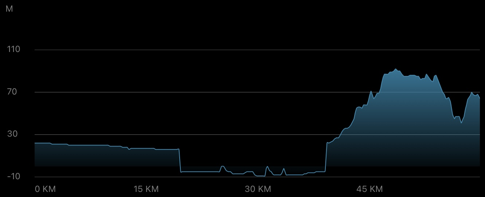
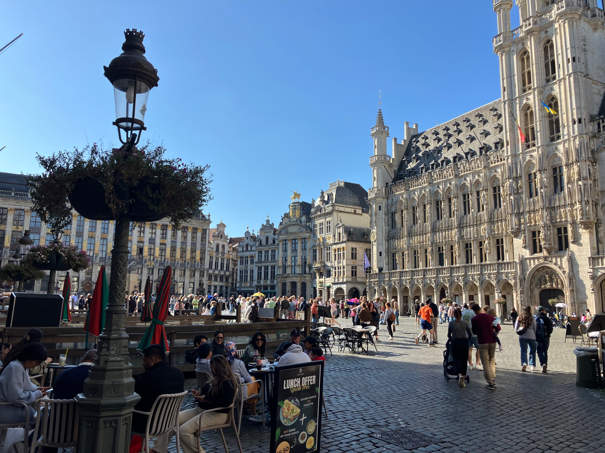

Daily Stats*
| Distance |
59.41 km |
| Time |
3:42:31 h |
| Avg. Speed |
16.0 km/h |
| Max. Speed |
27.9 km/h |
| Avg. Heart Rate |
125 bpm |
| Uphill |
185 m |
| Downhill |
134 m |
| Avg. Temperature** |
16.0 °C |

Elevation profile [m]
Slope profile [%]
*measured by Garmin Forerunner 945 & Sigma ROX 4.0
**measured at the lower back
Daybook
Well, first of all, I apologize for this post being online a day late. This is due to a cascade of unfortunate events that made yesterday's travel day the low point so far. As Jürgen Klopp said back when he was coach of BVB: "It's like so many things in life: if the washing machine breaks down, the next day the tumble dryer is also f****d—and then the TV gives up the ghost."
But one thing at a time: as you could read in my last post, I arrived safely in Ghent and managed to do a quick tour of the city. After some grocery shopping, I returned to my accommodation in the evening and watched the opening game of the Bundesliga. Everything was fine up to that point, even though I had already noticed the stairs creaking loudly (my room was on the second floor of the house, the bathroom was on the first floor, and my hosts were sleeping somewhere else). Around midnight, I went to bed (by lamplight) and was quickly irritated by a few millimeter-sized crawlers on the mattress, which I was able to remove easily. After about 10 minutes, a somewhat larger insect surfaced (see first impression), setting off alarm bells in my head, as I knew quite a bit about bed bugs. And this one looked exactly the same ... I switched into crisis mode, jumped out of bed, cleared out my bags, thoroughly checked everything, then put the bags in the other corner of the room and “watched” the bed. In the end, there was no way I could sleep, catching a total of three bedbugs and even seeing a fourth.
I stayed awake until dawn. Of course, I didn't want to wake my hosts (especially because of the children), but it was clear that I would leave as early as possible. At around 6:30 a.m., I packed my bags, checked everything again, and left the house in a completely exhausted state shortly after 7 a.m. It was a pity because my hosts were very friendly, and I felt sorry that they were so upset after I left them a note. As I learned, I was their first guest after vacation, in which time bedbugs must have settled in the cracks and crevices around the bed. Shit happens (at least I'll get my money back, and it will hopefully not happen to future guests)!
So I got on my bike earlier than usual. It was fitting that the rain started falling lightly right from the start, with a "comfortable" temperature of around 13°C. Thankfully, yesterday's route from Ghent to Brussels was relatively short (60 km) and flat, so I felt optimistic about finishing this leg, even if sitting on my bike like a wet sack rather than a young god.
During the first 20 km, I felt very tired, and the rain and wind increased so much by the time I reached Lokeren that I had to take a forced break under a bridge. You can imagine that the traveling conditions were really tough at that point ... Soon the rain calmed down and I carried on — on autopilot and on the verge of microsleep, I made my way via Zele to Dendermonde. A few meters along the river there, and I was already on my way to Lebbeke and Asse. My fatigue was largely under control, but I was still much slower than usual. In the meantime, I had informed my host in Brussels about the circumstances, and even though she couldn't give me early access to the room, I was at least allowed to wash and dry all my clothes immediately after arrival to eradicate any bedbugs. Stressful, but after that I could travel on with peace of mind.
Honestly, I don't remember much more about the route, as I was mostly in tunnel vision mode and my body was literally focused on survival. Around noon, I reached the Basilica of the Sacred Heart in Brussels (the fifth largest church in the world!; see third impression), where I decided to recharge my batteries with snacks and drinks and kill some time. At 3 p.m., I was finally allowed to check in, launder my clothes, and, dressed in a towel, rest a bit.
This morning, I visited a few more places in Brussels city center. The area with its shopping streets and historic buildings seemed very spacious to me and radiated with tradition (see fourth to seventh impressions). From the Grote Markt with the impressive Hôtel de Ville de Bruxelles, Brussels City Hall, I walked across the Mont des Arts (a famous complex with gardens, museums, and other cultural institutions) to the Palais Royal de Bruxelles. There I hopped on my bike to set off for my next destination, Liège. More on that in the next post :-)
In short, this leg of the tour, with all its difficulties, was the low point so far, and maybe that's just part of the experience. Anyway, some appliances definitely broke yesterday, to recap Jürgen Klopp's words ...
Impressions
May I introduce: the bed bug in action
Wet road near Ghent in the morning rain
Basilica of the Sacred Heart in Brussels

Grote Markt in Brussels
Hôtel de Ville de Bruxelles (Stadhuis) at the Grote Markt in Brussels
Jardin du Mont des Arts in Brussels with the Palais Royal de Bruxelles in the background
Palais Royal de Bruxelles